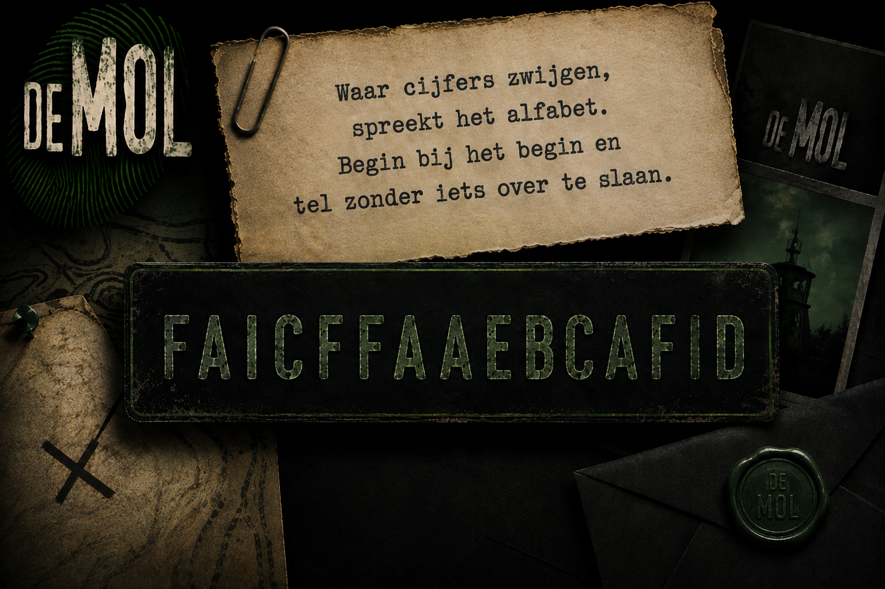

<!doctype html>
<html lang="nl"><meta charset="utf-8"><meta name="viewport" content="width=device-width,initial-scale=1">
<title>Decoder Try-Out v2.6</title>
<style>
body{font-family:Arial;margin:0;background:#111;color:#fff}
header{padding:14px;background:#000;border-bottom:1px solid #333}
main{max-width:820px;margin:auto;padding:14px}
button,label{display:inline-block;background:#6ee56e;color:#041;padding:12px 16px;border-radius:10px;font-weight:700;cursor:pointer;margin:6px 6px 6px 0}
label{background:#2d3a2d;color:#fff} input{display:none}
canvas{width:100%;background:#222;border-radius:12px;margin-top:12px}
pre{background:#181818;padding:12px;border-radius:8px;white-space:pre-wrap}
</style>
<header><h2>DECODER TRY-OUT v2.6</h2><div>16 vragen · scan je antwoordkaart</div></header>
<main>
  <button id=cam>Camera</button>
  <label>Foto kiezen<input id=file type=file accept="image/*" capture="environment"></label>
  <button id=snap hidden>Analyse</button>
  <video id=vid playsinline autoplay hidden></video>
  <canvas id=cv></canvas>
  <pre id=out>Nog geen analyse.</pre>
</main>
<script>
const EXPECTED={A:"CAACDBDDACDBCDCB",B:"ADABBABBABDDCABB"};
const params=new URLSearchParams(location.search);
const TEAM=(params.get("team")||"A").toUpperCase()==="B"?"B":"A";
const target=EXPECTED[TEAM];
const VW=1240,VH=1754,MARK=70;
const cols=[[248,343,437,531],[815,909,1004,1098]], y0=505,gap=115;
const pts=[]; for(let c=0;c<2;c++)for(let r=0;r<8;r++){const arr=[];for(let i=0;i<4;i++)arr.push([cols[c][i],y0+r*gap]);pts.push(arr)}
const cv=document.getElementById('cv'),ctx=cv.getContext('2d',{willReadFrequently:true}),vid=document.getElementById('vid'),out=document.getElementById('out');
let stream;
cam.onclick=async()=>{stream=await navigator.mediaDevices.getUserMedia({video:{facingMode:{ideal:'environment'}}});vid.srcObject=stream;vid.hidden=false;snap.hidden=false}
snap.onclick=()=>{cv.width=vid.videoWidth;cv.height=vid.videoHeight;ctx.drawImage(vid,0,0);run()}
file.onchange=e=>{const f=e.target.files[0];if(!f)return;const im=new Image();im.onload=()=>{const sc=Math.min(1,1800/im.width);cv.width=im.width*sc;cv.height=im.height*sc;ctx.drawImage(im,0,0,cv.width,cv.height);run()};im.src=URL.createObjectURL(f)}
const gray=(d,i)=>.299*d[i]+.587*d[i+1]+.114*d[i+2];
function detect(im){
 const d=im.data,w=im.width,h=im.height;
 // Zoek per hoek het zwarte referentievierkant als volledig verbonden object.
 const zones=[
   [0,0,w*.30,h*.30],
   [w*.70,0,w,h*.30],
   [w*.70,h*.70,w,h],
   [0,h*.70,w*.30,h]
 ];
 function findSquare(z){
   const [zx0,zy0,zx1,zy1]=z;
   const step=Math.max(2,Math.round(Math.min(w,h)/700));
   const nx=Math.ceil((zx1-zx0)/step), ny=Math.ceil((zy1-zy0)/step);
   const dark=new Uint8Array(nx*ny);
   for(let gy=0;gy<ny;gy++)for(let gx=0;gx<nx;gx++){
     const x=Math.min(w-1,Math.round(zx0+gx*step));
     const y=Math.min(h-1,Math.round(zy0+gy*step));
     const i=(y*w+x)*4;
     if(gray(d,i)<70) dark[gy*nx+gx]=1;
   }
   const seen=new Uint8Array(nx*ny);
   let best=null,bestScore=-1;
   const dirs=[[1,0],[-1,0],[0,1],[0,-1],[1,1],[-1,-1],[1,-1],[-1,1]];
   for(let sy=0;sy<ny;sy++)for(let sx=0;sx<nx;sx++){
     let id=sy*nx+sx;
     if(!dark[id]||seen[id])continue;
     let stack=[[sx,sy]], count=0,minx=sx,maxx=sx,miny=sy,maxy=sy,sumx=0,sumy=0;
     seen[id]=1;
     while(stack.length){
       const [x,y]=stack.pop(); count++; sumx+=x; sumy+=y;
       if(x<minx)minx=x;if(x>maxx)maxx=x;if(y<miny)miny=y;if(y>maxy)maxy=y;
       for(const [dx,dy] of dirs){const xx=x+dx,yy=y+dy;if(xx<0||yy<0||xx>=nx||yy>=ny)continue;
         const j=yy*nx+xx;if(dark[j]&&!seen[j]){seen[j]=1;stack.push([xx,yy])}}
     }
     const bw=maxx-minx+1,bh=maxy-miny+1,aspect=Math.min(bw,bh)/Math.max(bw,bh);
     const fill=count/(bw*bh);
     // Referentiemarker: compact, vrijwel vierkant en gevuld.
     if(count>=12 && aspect>.65 && fill>.45){
       const score=count*aspect*fill;
       if(score>bestScore){
         bestScore=score;
         best=[zx0+(sumx/count)*step,zy0+(sumy/count)*step];
       }
     }
   }
   return best;
 }
 const f=zones.map(findSquare);
 if(f.some(v=>!v))return null;
 return f; // TL TR BR BL, centrum van elk echt zwart hoekvierkant
}
function solve(A,b){const n=b.length;for(let i=0;i<n;i++){let m=i;for(let r=i+1;r<n;r++)if(Math.abs(A[r][i])>Math.abs(A[m][i]))m=r;[A[i],A[m]]=[A[m],A[i]];[b[i],b[m]]=[b[m],b[i]];let p=A[i][i];if(Math.abs(p)<1e-9)throw Error();for(let c=i;c<n;c++)A[i][c]/=p;b[i]/=p;for(let r=0;r<n;r++)if(r!==i){let f=A[r][i];for(let c=i;c<n;c++)A[r][c]-=f*A[i][c];b[r]-=f*b[i]}}return b}
function H(src,dst){const A=[],b=[];for(let i=0;i<4;i++){let[x,y]=src[i],[u,v]=dst[i];A.push([x,y,1,0,0,0,-u*x,-u*y]);b.push(u);A.push([0,0,0,x,y,1,-v*x,-v*y]);b.push(v)}let h=solve(A,b);return[h[0],h[1],h[2],h[3],h[4],h[5],h[6],h[7],1]}
function inv(m){let[a,b,c,d,e,f,g,h,i]=m,A=e*i-f*h,B=-(d*i-f*g),C=d*h-e*g,D=-(b*i-c*h),E=a*i-c*g,F=-(a*h-b*g),G=b*f-c*e,H=-(a*f-c*d),I=a*e-b*d,det=a*A+b*B+c*C;return[A/det,D/det,G/det,B/det,E/det,H/det,C/det,F/det,I/det]}
function P(m,x,y){let z=m[6]*x+m[7]*y+m[8];return[(m[0]*x+m[1]*y+m[2])/z,(m[3]*x+m[4]*y+m[5])/z]}
function run(){
 const im=ctx.getImageData(0,0,cv.width,cv.height),mk=detect(im);
 if(!mk){out.textContent="De vier hoekmarkeringen werden niet gevonden. Neem de foto opnieuw.";return}
 const markerCenter=MARK+21;
 const M=inv(H(mk,[[markerCenter,markerCenter],[VW-markerCenter,markerCenter],[VW-markerCenter,VH-markerCenter],[markerCenter,VH-markerCenter]]));
 const d=im.data,w=im.width,h=im.height;
 let code="";
 for(let q=0;q<16;q++){
   let best=0,scores=[];
   for(let a=0;a<4;a++){
     let[cx,cy]=pts[q][a],dark=0,tot=0;
     for(let yy=cy-15;yy<=cy+15;yy+=3)for(let xx=cx-15;xx<=cx+15;xx+=3){
       let[pX,pY]=P(M,xx,yy),X=Math.round(pX),Y=Math.round(pY);
       if(X>=0&&X<w&&Y>=0&&Y<h){
         let k=(Y*w+X)*4; tot++; if(gray(d,k)<115)dark++;
       }
     }
     scores.push(tot?dark/tot:0);
   }
   for(let a=1;a<4;a++)if(scores[a]>scores[best])best=a;
   code+="ABCD"[best];
 }
 let errors=0;
 for(let i=0;i<16;i++)if(code[i]!==target[i])errors++;
 if(errors===0){
   out.innerHTML='<strong style="font-size:1.6em">0 fouten</strong><div style="margin-top:14px"></div>';
 }else{
   out.innerHTML='<strong style="font-size:1.6em">'+errors+' fout'+(errors===1?'':'en')+'</strong>';
 }
}
</script></html>